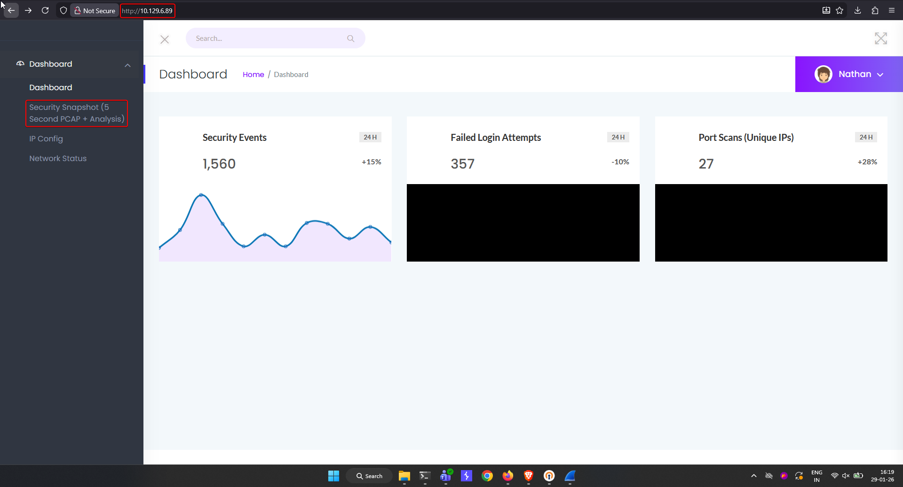

Cap
Difficulty: Easy OS: Linux
Summary¶
Cap is an easy Linux box that starts with an exposed network-monitoring web dashboard. A classic IDOR on a /data/<id> download endpoint leaks a previous user's captured FTP traffic, which contains plaintext credentials. Those credentials grant SSH access as nathan. Privilege escalation to root is achieved by abusing a misconfigured Linux capability (cap_setuid) assigned to the system's python3.8 binary.
1. Reconnaissance¶
Port Scan¶
A fast scan with rustscan (handing off to nmap for service detection) revealed three open ports:
┌──(kali㉿kali)-[~]
└─$ rustscan -a 10.129.6.89 -u 5000 -- -sS -T4
.----. .-. .-. .----..---. .----. .---. .--. .-. .-.
| {} }| { } |{ {__ {_ _}{ {__ / ___} / {} \ | `| |
| .-. \| {_} |.-._} } | | .-._} }\ }/ /\ \| |\ |
`-' `-'`-----'`----' `-' `----' `---' `-' `-'`-' `-'
The Modern Day Port Scanner.
________________________________________
: http://discord.skerritt.blog :
: https://github.com/RustScan/RustScan :
--------------------------------------
Port scanning: Because every port has a story to tell.
[~] The config file is expected to be at "/home/kali/.rustscan.toml"
[~] Automatically increasing ulimit value to 5000.
Open 10.129.6.89:21
Open 10.129.6.89:22
Open 10.129.6.89:80
[~] Starting Script(s)
[>] Running script "nmap -vvv -p {{port}} -{{ipversion}} {{ip}} -sS -T4" on ip 10.129.6.89
Depending on the complexity of the script, results may take some time to appear.
[~] Starting Nmap 7.95 ( https://nmap.org ) at 2026-01-29 16:18 IST
Initiating Ping Scan at 16:18
Scanning 10.129.6.89 [4 ports]
Completed Ping Scan at 16:18, 0.34s elapsed (1 total hosts)
Initiating Parallel DNS resolution of 1 host. at 16:18
Completed Parallel DNS resolution of 1 host. at 16:18, 0.06s elapsed
DNS resolution of 1 IPs took 0.06s. Mode: Async [#: 1, OK: 0, NX: 1, DR: 0, SF: 0, TR: 1, CN: 0]
Initiating SYN Stealth Scan at 16:18
Scanning 10.129.6.89 [3 ports]
Discovered open port 22/tcp on 10.129.6.89
Discovered open port 21/tcp on 10.129.6.89
Discovered open port 80/tcp on 10.129.6.89
Completed SYN Stealth Scan at 16:18, 0.57s elapsed (3 total ports)
Nmap scan report for 10.129.6.89
Host is up, received echo-reply ttl 62 (0.39s latency).
Scanned at 2026-01-29 16:18:18 IST for 1s
PORT STATE SERVICE REASON
21/tcp open ftp syn-ack ttl 62
22/tcp open ssh syn-ack ttl 62
80/tcp open http syn-ack ttl 62
Read data files from: /usr/share/nmap
Nmap done: 1 IP address (1 host up) scanned in 1.10 seconds
Raw packets sent: 7 (284B) | Rcvd: 6 (240B)
| Port | State | Service |
|---|---|---|
| 21 | open | ftp |
| 22 | open | ssh |
| 80 | open | http |
FTP and SSH are standard, but with no obvious anonymous FTP access or exposed SSH vulnerability, the web service on port 80 was the logical starting point.
2. Web Enumeration¶
Browsing to http://10.129.6.89 presented a "Security Dashboard" application, logged in as a user named Nathan. The sidebar exposed several sections, including an interesting feature: Security Snapshot (5 Second PCAP + Analysis).

Dashboard with Security Snapshot feature highlightedSelecting this option captures 5 seconds of live network traffic on the box and presents summary statistics (packet counts, protocol breakdown, etc.) with a Download button to pull the raw .pcap file.
Testing this feature generated the capture shown at http://10.129.6.89/data/1, and the UI exposed a Download button for grabbing the corresponding .pcap.

/data/1 endpoint showing a freshly generated 1-packet capture
3. Exploiting the IDOR¶
The capture is referenced directly by a numeric, user-controllable ID in the URL path — /data/<id>. This is a textbook Insecure Direct Object Reference (IDOR): there is no check that the requesting user owns or generated that particular capture ID.
By simply decrementing the ID and requesting http://10.129.6.89/data/0, an earlier capture belonging to another session was retrieved — one containing significantly more traffic (72 packets vs. 1 in the fresh capture), including FTP sessions and HTTP data never generated by the current session.

/data/0 endpoint returning a much larger, previously-generated capture — the IDOR
Downloading and opening 0.pcap in Wireshark surfaced a full FTP login sequence in plaintext:

Wireshark view of the FTP session showing USER/PASS in cleartext
Request: USER nathan
Response: 331 Please specify the password.
Request: PASS Buck3tH4TF0RM3!
Response: 230 Login successful.
Credentials harvested:
This confirms the root cause: the application does not scope captured PCAP files to the session/user that generated them, and sequential/predictable IDs allow any authenticated (or even unauthenticated, depending on access control) user to pull historical captures — including ones containing other users' credentials in cleartext protocols like FTP.
4. Initial Access (SSH)¶
The recovered credentials worked directly against SSH:
SSH login as nathan succeeding
This dropped into a shell on an Ubuntu 20.04.2 LTS host as the nathan user.
User Flag¶
Reading user.txt

5. Privilege Escalation¶
With shell access as nathan, the next step was hunting for privilege escalation vectors. Checking Linux capabilities assigned to binaries on the filesystem revealed the misconfiguration:
nathan@cap:~$ getcap -r / 2>/dev/null
/usr/bin/python3.8 = cap_setuid,cap_net_bind_service+eip
/usr/bin/ping = cap_net_raw+ep
/usr/bin/traceroute6.iputils = cap_net_raw+ep
/usr/bin/mtr-packet = cap_net_raw+ep
/usr/lib/x86_64-linux-gnu/gstreamer1.0/gstreamer-1.0/gst-ptp-helper = cap_net_bind_service,cap_net_admin+ep
The critical finding: /usr/bin/python3.8 has the cap_setuid capability set with effective, inheritable, and permitted flags (+eip). This capability allows a process to arbitrarily change its own UID — including to 0 (root) — without needing to be run via sudo or be SUID-root itself.
Since this Python binary can set its own UID, calling os.setuid(0) from within a Python process executed via that binary grants a root-privileged process:
This spawns a bash shell running with UID 0.
Root Flag¶

getcap enumeration, python3.8 privilege escalation, and root.txt
6. Root Cause & Remediation¶
| Issue | Root Cause | Fix |
|---|---|---|
IDOR on /data/<id> |
Sequential, predictable resource IDs with no ownership/access-control check | Use unguessable identifiers (UUIDs) and enforce server-side authorization tying each capture to the session/user that created it |
| Cleartext FTP credentials in PCAP | FTP transmits credentials unencrypted; captured and stored without redaction | Disable/replace FTP with SFTP/FTPS; avoid persisting raw packet captures containing credentials, or redact/encrypt them at rest |
cap_setuid on python3.8 |
Unnecessary Linux capability granted to an interpreter binary usable for arbitrary code execution | Remove the capability (setcap -r /usr/bin/python3.8) — an interpreter should never hold cap_setuid, as it trivially grants full privilege escalation to anyone who can execute it |
7. Attack Chain Summary¶
Nmap scan → ports 21/22/80 open
↓
Web dashboard (port 80) → "Security Snapshot" PCAP feature
↓
IDOR on /data/<id> → pull earlier capture (/data/0)
↓
Wireshark analysis → plaintext FTP creds (nathan:Buck3tH4TF0RM3!)
↓
SSH as nathan → user.txt
↓
getcap enumeration → python3.8 has cap_setuid
↓
os.setuid(0) via python3.8 → root shell → root.txt